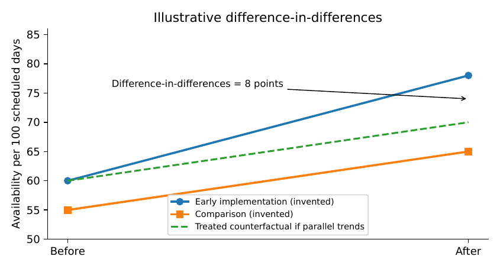

Knowing Whether a Solution Actually Works
A hospital can have accurate forecasts, correctly functioning software and unchanged patient outcomes. This chapter asks a harder question than whether an algorithm runs: did introducing the proposed practice cause an improvement that matters? We learn to formulate that question, build a defensible comparison, expose the assumptions behind causal estimates, and report costs and uncertainty without claiming more than the evidence supports.
The decision that remains after the software works
Imagine the district health office that has followed the first eight chapters. Staff have checked the stock ledger, reconstructed plausible demand, compared ordering policies and built an application that works offline. Its simulation predicts fewer shortages. The district now asks a reasonable question: If we adopt it, will patients actually find essential medicines when they need them?
The question is not answered by a smaller forecast error. Suppliers may miss deliveries; clinical staff may continue ordering informally; or a cost-saving policy may increase shortages of a medicine that is particularly important. Sometimes an intervention helps for reasons other than the model. Extra supervision during the pilot can improve record keeping, giving the appearance that the algorithm is responsible. To claim improvement we need to ask what would have happened to the same service without the intervention.
| Claim | Suitable question | Typical evidence |
|---|---|---|
| Mathematics is valid | Do the deductions follow from stated assumptions? | Proofs, counterexamples, dimensional checks |
| Code implements the rule | Does the program compute the intended quantities? | Tests, code review, replay, reproducible runs |
| System can be used | Does the tool survive the actual workflow? | Field usability, failure drills, process records |
| Service improves | Is the outcome better because of the intervention? | Credible comparison, measured outcomes, sensitivity analysis |
These claims should be evaluated separately. A favourable answer in one row does not imply a favourable answer in the next. This separation is essential to implementation research (Proctor 2011; Donabedian 1988) and the logic of impact evaluation (Gertler et al. 2016; Hernán and Robins 2020).
Start from a decision, not a statistical test
For the medicine-ordering example, the decision maker needs at least five statements in writing: which facilities are eligible, which practice changes, which outcomes matter, how long the assessment will run, and what size of benefit would justify the extra cost. These statements should be agreed before seeing the post-intervention outcomes.
A useful primary outcome might be the proportion of scheduled days on which a specified essential medicine was available. Other outcomes include unfilled prescriptions, expiry, emergency procurement, staff work time and total resource cost. Define numerator, denominator and recording rule. A facility that closes for two weeks must not quietly disappear from the denominator merely because the new software recorded no transactions there.
An illustrative estimand.
Let denote facility ’s average medicine-availability rate over a fixed follow-up period under the new ordering practice, and its rate under the existing practice. The average treatment effect for an eligible population of facilities is
(9.1)
If we instead care about the effect among facilities that actually adopt the tool, we need an estimand conditional on adoption. This is not the same as equation (9.1) if adoption depends on local leadership or resources. The distinction between an intention-to-treat effect and a treatment-on-the-treated effect is similarly important in a randomised rollout (Angrist and Pischke 2009; Gertler et al. 2016).
The counterfactual problem is immediate: a facility cannot simultaneously follow both ordering practices at the same time under the same circumstances. We observe one of and , not both. That is the fundamental obstacle that experimental and observational designs address (Hernán and Robins 2020).
What a controlled comparison can identify
Suppose eligible facilities are randomly allocated to immediate implementation () or continued usual practice (), and assume complete outcome measurements. Define , with . Under random assignment, is independent of the pair of potential outcomes. Then
Consequently, the difference of group means targets the population average treatment effect. The argument is simple but its assumptions are substantial: the groups must truly be assigned by a valid mechanism, the outcome must mean the same thing in both groups, and the intervention used for one facility must not silently alter the counterfactual for another.
Proposition. For a fixed finite population with potential outcomes and , let exactly of units be assigned to treatment uniformly among all assignments of that size, where . Under consistency and no interference, the estimator satisfies .
Proof. Each unit has inclusion probability . Linearity of expectation yields
Similarly, because each unit is in control with probability , the expected control mean is . Subtracting proves the statement. ◻
Randomisation does not guarantee that one small trial will look balanced, or that the reported estimate is precise. A small programme can have a valid experiment with an uninformative confidence interval. Moreover, the unbiasedness proof does not rescue a trial in which outcomes are selectively missing or a control facility uses the intervention by another route. The evaluation must document implementation, measurement, and deviations.
Unit of assignment versus unit of observation
A district may assign ten health facilities but collect thousands of patient-level transactions. The resulting study does not have thousands of independent assignments. Patients within a facility share staff, procurement and stock records. If assignment is at facility level, uncertainty must reflect that clustering; treating every transaction as independent produces artificially narrow intervals. Where a simple model of equal-sized clusters is reasonable, the design effect is approximately
(9.2)
where is the number of observations per cluster and is within-cluster correlation. This formula is a planning approximation, not a replacement for cluster-aware analysis (Cochran 1977; Lohr 2019).
If a pilot includes six facilities, no amount of transaction volume turns it into a high-powered study of effects across facilities. This is an especially common temptation when data collection is inexpensive but participating institutions are few.
When random assignment cannot be used
An observational comparison can still be valuable, but the burden of explanation grows. The programme may be installed first in facilities with the most motivated managers; these facilities might have improved under either policy. Routine data may also change when the new application begins to record shortages that previously went unreported. Such changes can produce spurious differences even when the arithmetic is correct.
A causal diagram can help identify candidate confounders: procurement budgets, supplier reliability, geographical accessibility, staffing and management. Adjusting for a variable measured after the intervention that is itself affected by the intervention may remove part of the effect or create bias. Adjustment should follow a causal model rather than a convenient collection of columns (Hernán and Robins 2020).
Difference-in-differences: derive before trusting
Assume we observe an outcome for a treatment group and a comparison group , in periods before and after rollout. Write and define
(9.3)
The estimator removes a permanent difference between groups and a common period shift. To interpret it causally, we need a parallel trends assumption: absent treatment, average outcomes in the two groups would have changed by the same amount. This is an assumption about an unobserved counterfactual trend, not a property that the formula automatically creates (Angrist and Pischke 2009; Gertler et al. 2016).
Proposition. Suppose only group receives treatment at . Assume consistency, no anticipation, no spillovers, stable measurement and
Then the population counterpart of equation (9.3) equals , the average effect in the treated group after implementation.
Proof. The treated post-period mean is . Every other cell is observed under no treatment. Add and subtract in the first difference. The remaining untreated trend difference is zero by the stated assumption; what remains is the average treated post-period effect. ◻
A diagram of pre-intervention trends is valuable: divergence before implementation is strong evidence against a simple parallel-trends interpretation. Similar pre-trends, however, are not proof of the assumption. Report alternative comparison groups, possible concurrent policy changes, changes in recording and sensitivity to the observation window. With staggered treatment dates and heterogeneous effects, conventional two-way fixed-effects regressions can behave unexpectedly; methods designed for staggered adoption should be considered (Callaway and Sant’Anna 2021).

Example. In an invented four-cell example, treated facilities improve from 60 to 78 days of availability per 100 scheduled days, while comparison facilities improve from 55 to 65. Their before-after changes are 18 and 10 points, so the difference-in-differences estimate is percentage points. The naive treated before-after improvement, points, assigns the entire time trend to the intervention. Neither number is automatically causal: if the treated facilities also received a special medicine shipment, the -point estimate remains confounded.
Matching, regression discontinuity and interrupted time series
Matching can help construct more comparable groups on measured baseline covariates, but it cannot correct unmeasured differences on its own. In a regression discontinuity design, a programme assigned by a known cutoff may identify a local effect near that cutoff when potential-outcome regression functions are continuous there and assignment cannot be strategically manipulated. The estimate generally describes people or sites near the threshold, not the whole country. An interrupted time series uses repeated observations to model baseline levels and trends; changes to case definition, reporting, seasonality or concurrent policy still require scrutiny. None of these design names is a certificate of validity; each works only when its own assumptions can be defended (Shadish, Cook, and Campbell 2002; Angrist and Pischke 2009).
An evaluation that can be carried out with few resources
Evaluations do not have to begin with expensive technology. A facility can record daily stock on hand, scheduled service days, patients unable to receive an indicated item, emergency orders, costs and delivery delays. The difficult part is reliable definitions and a defensible counterfactual. A practical design should be proportionate to the importance and reversibility of the decision.
Write the causal question. Name the treatment, comparison, population and follow-up window.
Register outcomes and decisions. Agree the primary outcome and meaningful minimum effect with practitioners before viewing the results.
Map the assignment mechanism. Who chooses the first facility? Can selection be random? What nonrandom factors influence uptake?
Audit baseline records. Investigate missing periods, reporting changes and seasonality.
Preserve the comparison. Record supply-chain policy changes, extra funding and changes in supervision for both groups.
Analyse at the right level. Use cluster-aware inference for facility-assigned interventions and report uncertainty honestly.
Check unintended effects. A policy could improve one medicine’s availability while diverting funds from another.
Decide what happens next. Continue, modify, extend the pilot, or withdraw according to evidence and operational judgment.
A pilot whose confidence interval includes both a valuable benefit and meaningful harm has not proved the solution works. It may still have taught the institution something important about feasibility, data collection and what additional measurement is needed.
Missing outcomes and changed measurement
Suppose stock availability is observed in 80 of 100 scheduled facility-days and 60 observed days show stock present. The recorded rate among observed days is . Without assumptions on the 20 missing days, the rate across all 100 scheduled days lies between and . The seemingly precise is conditional on observation; it cannot represent the full period without a missingness assumption.
Proposition. Let for scheduled observations, and suppose outcomes are observed with sum . With no assumptions on the unobserved outcomes, the population mean lies in
(9.4)
These bounds are sharp when the missing outcomes can attain zero and one.
Proof. Each of the missing contributions is between zero and one. Adding their smallest and largest possible totals to and dividing by gives equation (9.4). Setting all missing outcomes to zero or one attains the endpoints. ◻
Repeated missingness may depend on stock-outs, power loss or staff workload. Those mechanisms should be investigated. For a causal comparison, bounds or sensitivity analysis should be applied separately to treatment and comparison groups before differences are interpreted. Multiple imputation is a method that relies on its own assumptions, not a way of creating observed facts (Little and Rubin 2019; Rubin 1976).
What uncertainty intervals mean here
A confidence interval describes uncertainty arising under a specified sampling or randomisation model; it is not the probability that a fixed parameter lies in the reported interval. In a randomised comparison, finite-sample randomisation inference may be appropriate when the assignment mechanism is known. In a sufficiently large observational study, robust uncertainty estimates can account for clustering and serial dependence where the design supports them. Reporting a narrow interval around a biased estimate is not progress.
For the simple two-group case with independent observations within groups, a conventional standard error is
but the formula is inappropriate for naive use when assignments are clustered or outcomes are serially correlated. An evaluation report must say what constitutes an independent unit and which uncertainty model it uses.
Costs must be attached to outcomes that matter
A model can reduce measured shortages and still be unaffordable. Count device costs, training, internet, maintenance, batteries, staff work, replacement and record verification. Classify one-time costs separately from recurring costs. State the institutional perspective: a change may save district money while increasing unpaid work for patients.
For two alternatives, an incremental cost-effectiveness ratio is
(9.5)
provided and a meaningful common effectiveness scale exists. The ratio becomes misleading when effects are close to zero or of opposite sign; present costs and outcomes separately and inspect dominance. Where a defensible willingness-to-pay value exists, incremental net benefit is . No threshold should be imported uncritically from a different health system or funding context.
Example. Suppose the current service costs 1,200,000 local currency units over the assessment period and provides 8,000 available medicine-days. A proposed service costs 1,320,000 and provides 8,400 days, under explicit hypothetical assumptions. The extra 400 medicine-days cost 120,000 units, or 300 units per additional day. This ratio does not estimate value to patients and says nothing about the distribution of the 400 days across essential medicines. A district would need to examine opportunity cost: which other service loses the 120,000 units?
Uncertainty about costs and effects should be evaluated jointly. It is poor practice to use the most optimistic effectiveness estimate and the most optimistic cost estimate from unrelated scenarios.
Reproducible laboratory: an explicit counterfactual trap
The companion program generates an invented facility-period dataset with two time periods, a common improvement, a group-specific change and a stated intervention effect. It produces four-cell means and a difference-in-differences summary. Changing the untreated trend for treated facilities illustrates how an estimator can be computed correctly and still fail to identify the effect. Randomised noise in the script serves teaching only; no output is claimed to represent Ugandan hospital records.
The exercise has three stages. First, check the four-cell calculation by hand. Second, alter the group-specific untreated trend and record the bias relative to the known simulation parameter. Third, design a feasible real pilot that could distinguish a stock-policy effect from a procurement-budget change. A technically proficient reader should be able to explain why code verification and causal validity are separate checks.
The evaluation protocol and evidence record
Before an institution begins, create a short protocol containing the following fields:
| Field | What the team must specify |
|---|---|
| Decision and owner | The adoption decision, responsible institution, and who may stop the intervention |
| Eligibility and assignment | Included facilities, selection rule, timing, contamination risk |
| Treatment | Exact changes to ordering, staffing, training and software |
| Comparison | Existing practice or alternative, with evidence for its credibility |
| Primary outcome | Definition, units, denominator, frequency and missingness rule |
| Other outcomes | Cost, equity, workload, safety and unintended consequences |
| Analysis | Estimand, estimator, adjustment, clustering, sensitivity tests |
| Ethics and protection | Permissions, data minimisation, consent where needed |
| Reporting | Who receives negative results, evidence limits and next decision |
A report should distinguish was deployed, was used, operated reliably, and caused an improvement. Each is important, none is synonymous with the others. For institutions with very limited resources, good evaluation may be the decision not to scale: it prevents a costly idea from being repeated simply because the first demonstration looked attractive.
Deeper method: choosing an evaluation design before a pilot begins
A decision maker may be willing to test a change but unwilling to deny it permanently to some facilities. This does not rule out a controlled study. The evaluator can sometimes randomise the order in which eligible facilities receive the change. Such a rollout can be ethically and operationally attractive when the institution could not implement the policy everywhere immediately anyway. The comparison is then between facilities already offered the intervention and those not yet offered it, over precisely defined periods.
The rollout order, however, must not be chosen after inspecting the early outcomes. If managers move successful sites to the front of the schedule or change the intervention in response to mid-study results, the analysis must account for those decisions. A transparent assignment record matters more than a sophisticated regression written months later.
Cluster assignment in a practical setting
When the intervention changes an entire facility’s ordering rules, facility-level assignment is generally more sensible than randomising individual patients. It would be difficult and unsafe to apply two incompatible purchasing rules to patients within one shared stockroom. The facility, rather than an individual prescription, becomes the experimental unit. The analysis may measure outcomes daily, but uncertainty about treatment effects must respect the number of independently assigned facilities.
Before randomising, group facilities into relevant strata if doing so improves comparability and is justified in the design: for example, comparable size categories or geographical service types. Document the strata and randomly assign within them. Do not create many strata with only one eligible facility per condition, leaving little randomisation. The published result should report the actual assignment procedure, not simply say “randomly selected.”
The design may need to consider shared procurement depots. If treated facilities draw from a common, capped medicine supply, their extra orders can deprive comparison facilities of stock. The treatment and comparison groups are then coupled through the resource system. A valid evaluation may require assignment at the level of the shared depot, or explicit measurement of spillovers. This is a substantive problem, not a technical nuisance solved by cluster-robust standard errors.
The intention-to-treat question
Suppose the randomised rollout offers a tool to ten facilities, but only eight actually use it. The effect of assignment measures what happens when an institution offers the programme under realistic implementation conditions. It includes the possibility of nonadoption. This intention-to-treat effect can be a policy-relevant quantity: a ministry considering rollout may care about the effect of the real programme it can deliver, not the idealised effect among only perfect adopters.
A comparison based on actual use rather than assigned offer can be confounded: motivated staff may be more likely both to use the tool and to maintain complete stock records. Estimating an effect among compliers requires additional assumptions or a design such as an instrumental-variable analysis. The simple difference in outcomes between users and nonusers is not generally that effect (Angrist and Pischke 2009; Gertler et al. 2016).
Regression discontinuity with an explicit limit
Suppose scarce service grants are assigned to facilities whose pre-policy readiness score is at least cutoff . Facilities just below and just above the cutoff might be comparable, aside from receiving the grant. A sharp regression discontinuity design studies the jump in the conditional expectation of an outcome at :
(9.6)
The limits have a causal interpretation near the cutoff only if, in the absence of treatment, the expected potential outcomes evolve continuously through , along with other relevant assumptions. The design is vulnerable if facilities can manipulate the readiness score to pass the threshold or if another policy changes at the same score. A difference near the cutoff need not describe what would happen to facilities with very low readiness scores.
Example. Suppose a hypothetical subsidy begins at score 70. Facilities scoring 69 and 71 differ little in observed readiness, and an appropriately designed analysis suggests a benefit near 70. A facility scoring 25 may have very different staff capacity and record quality; the estimated local effect does not establish that the same subsidy will help it. Transport from near-threshold facilities to all facilities is a new question. It needs the reasoning of Chapter Chapter 11.
Researchers should report the bandwidth, functional form, data density around the cutoff, covariate balance checks, and sensitivity to reasonable analytical choices. A graph with a sharp-looking discontinuity is helpful but not a substitute for identifying which programmes changed at the cutoff (Shadish, Cook, and Campbell 2002; Angrist and Pischke 2009).
Interrupted time series and the meaning of a baseline trend
Suppose a district deploys an improved appointment system throughout all clinics on one day, leaving no contemporaneous comparison district. If adequate observations exist both before and after, an interrupted time series can compare post-intervention behaviour with an extrapolated pre-intervention pattern. A simple segmented model is
(9.7)
The coefficient represents an immediate level change at implementation in the model, while represents a change in slope. But the model assumes the baseline trend would otherwise have continued, after accounting for factors such as seasonality and autocorrelation. A vaccine shortage or a revised reporting form at may cause a change unrelated to the appointment system.
A credible analysis should examine pre-trend fit, residual dependence, outliers, seasonality, policy history and alternative explanations. If the data consist of only three before and three after observations, a flexible segmented model may be too fragile to support a strong claim. A longer series is not automatically sufficient either; it must contain comparable measurements across the relevant time periods.
Stepped implementation: design and ethics together
A staged rollout can reduce the practical tension between wanting an evaluation and wanting all eligible sites to receive a promising service. Yet it does not remove the ethical obligation to consider risk. If the intervention is known to be safer and delaying it would cause unacceptable harm, an evaluation design that intentionally withholds it may not be appropriate. Conversely, if efficacy and safety are genuinely uncertain, rapid unmeasured rollout can harm many more people than a carefully monitored pilot.
The ethical decision belongs to responsible institutions and relevant review bodies, informed by patients and staff where appropriate. A book can explain design options; it cannot authorise a clinical or public-service experiment.
An evaluative model of service quality
The ordering algorithm may be only one contributor to medicine availability. In a stylised structural model,
where is demand, delivery delay, budget, staffing, order-management practice and unmeasured influences. A policy changing may have a large effect when is short and almost no effect when the supply chain has collapsed. The average effect across facilities depends on the distribution of these modifiers. This is one reason impact evaluation should report heterogeneous outcomes rather than a single mean when sufficient evidence exists.
The model is not identified merely by writing . Its purpose is to guide what should be measured and why a plausible counterfactual might fail. Chapter Chapter 2 made the same distinction for physical models: equations clarify assumptions; observations determine whether those assumptions describe the service.
Negative results and publication responsibility
A study in which the new method provides no demonstrated benefit can be valuable if it identifies a reliable baseline, an unforeseen barrier or a data problem. Repeatedly changing the outcome or evaluation window until a favourable number appears undermines inference. Ideally, primary outcomes, analysis choices and major exclusions should be documented before examining the intervention results. Changes may be necessary, but the report should distinguish planned and exploratory analyses.
When manuscripts or project reports describe a multi-stage evaluation, include the dates of design, data collection, intervention and analysis. An institution should be able to see when an outcome was selected relative to the observed results. This discipline helps prevent a computer-generated table from becoming an unsupported institutional claim.
Extended investigation: why a medicine pilot can mislead
Consider a district with fourteen facilities. Six receive a new stock-ordering protocol at the beginning of a financial quarter. The other eight keep the old procedure. Before the change, the intervention facilities tend to be larger, closer to the procurement depot and managed by staff who have previously participated in training. An analyst receives monthly medicine-availability records and is asked to assess the new protocol.
The first danger is selection. A facilities list is not an assignment mechanism. The health authority may have chosen the six facilities because they were ready, because they had poor outcomes, or because their managers requested the intervention. Each reason suggests a different potential bias. If the selected sites had unusually low availability in the final pre-period, regression toward more typical levels could create an apparent gain even without the protocol. If the selected sites had better leadership, their outcomes might have improved more rapidly under normal practice. Neither source of bias is repaired by adding many individual dispensing records to the model.
The analyst should reconstruct the decision that assigned facilities, not merely the dates when software appeared. This may require interviews and written programme records. A carefully documented nonrandom pilot can still be informative, but it should not be described as though assignment had been random.
The outcome is produced by a recording system
Assume the initial ledger reports the number of stock-out days for each item. Before implementation, staff record a stock-out only when a monthly register is reviewed. After implementation, the tool records a stock-out automatically whenever a transaction cannot be fulfilled. The new records are more complete. A naive before-after analysis might conclude that shortages increased even if the actual physical availability improved. A second analyst might incorrectly delete the new flagged records as “outliers” and conclude that the project produced large gains.
A defensible study checks whether the numerator and denominator represent the same event under both systems. One possibility is a repeated independent physical count for a randomly selected set of medicines and dates in both groups. This will cost staff time, but it produces evidence about measurement. If comparable physical counts cannot be obtained, the evaluation should present the remaining uncertainty rather than pretend that the administrative indicators are interchangeable.
A fully worked, invented panel
Let be the average percentage of scheduled medicine-days with stock available. The following numbers are chosen only to teach the arithmetic.
| Group | Before | After | Change |
|---|---|---|---|
| Early implementation | 61 | 79 | |
| Comparison | 57 | 68 | |
| Between-group difference |
The DiD estimate is percentage points. Suppose, however, that records show the intervention group also received a temporary logistics grant, while comparison facilities did not. The grant could improve availability independently of the software. The untreated trend for the treated group is no longer credible without additional adjustment or a design that isolates the effects. The calculation is still seven; the causal interpretation is not established.
A useful sensitivity exercise imposes a hypothetical untreated-trend advantage for the treated group relative to the comparison. Under the simple additive sensitivity model, the attributed intervention effect becomes . For , the values are percentage points. The numbers do not estimate a probability distribution for bias. They reveal how much an unobserved differential trend would have to matter before the decision changed.
Why pre-trends are informative but not decisive
Suppose we can recover six pre-intervention months. Plot the treated-minus-comparison gap for every month, not just the last month. If the gap had been widening consistently before implementation, a two-period parallel-trends assumption is difficult to defend. If the gap had been stable, a differential post-intervention procurement shock could still invalidate it. Pre-trend checks test some violations, not every possible violation. When group sizes are small, lack of a statistically significant pretrend can simply reflect low power.
To improve the design, consider several comparison candidates, matched on pre-period availability and documented supply-chain characteristics. Record each choice before viewing the post-period outcomes. Where the programme’s rollout order is not yet fixed, a transparent lottery among eligible sites can be a better use of limited administrative flexibility than extensive after-the-fact model adjustment. If the institution cannot randomise, careful staggered-adoption methods may be available, but they too require clearly described assumptions (Callaway and Sant’Anna 2021).
Extended mathematics: individual versus policy effects
Not every intervention has an effect that can be captured by an individual treatment indicator. A stock-ordering policy can affect suppliers’ allocation decisions. If one facility orders more, another facility may receive less from the same constrained depot. Then facility ’s outcome may depend on the treatment vector rather than only . Potential outcomes must be written if such interference is material. Proposition the proposition relies on no interference, so its interpretation can fail when the intervention changes the shared supply system.
For a district-wide policy, it may be more appropriate to assign districts, evaluate system-level outcomes, or explicitly measure spillovers. Those alternatives are not automatically feasible; the right design depends on the actual decision and size of the service system. They illustrate a general rule: when a model assumes the units do not affect one another, ask whether resources, information or human behaviour couple them.
A decision threshold for continuing a pilot
Imagine the district’s decision is to expand only if the new protocol improves medicine availability by at least five percentage points, without causing meaningful harm to remote facilities or exceeding the agreed budget. Let denote the population effect and write the substantive target as when availability is measured on a zero-to-one scale. A confidence interval does not establish that the target has been reached. Nor does a point estimate of by itself satisfy a safety criterion. The decision record should say whether the evidence supports expansion, continued limited evaluation or redesign.
This avoids a common mistake: treating a small -value or an impressive graph as sufficient justification for a complex operational decision. Statistical significance is one part of evidence. Magnitude, practical relevance, uncertainty, distribution of benefits, affordability and durability also matter.
Laboratory notebook: a deliberately broken design
The Chapter 9 script deliberately separates the known simulated intervention effect from an optional group-specific untreated trend. With default arguments it generates 40 invented treated and 40 invented comparison facilities, two periods per facility, a shared time trend, an effect of eight outcome units and random measurement noise. Its estimated DiD is close to, but not exactly, eight because the sample includes random noise.
Now run the script with a nonzero –trend-difference
parameter. The estimated DiD moves approximately by that amount, even
though the coded intervention effect remains eight. This is a
transparent counterexample: perfect execution of the estimator does not
imply identification when parallel trends fails. A robust report must
include the generating mechanism in the teaching case and the
uncertainties about that mechanism in the field case.
A field instrument that exposes missingness
For a selected medicine and day, collect: whether the facility was scheduled to open, whether it actually opened, whether the item was physically counted, stock on hand at a specified time, any patient request that could not be filled, whether substitution was possible, and which staff member verified the record. Record separate reason codes for unavailable count, absent staff, lost paper record, and facility closure. A blank entry should not automatically mean zero stock, zero demand or normal operation.
This instrument should be developed with clinical staff so its definitions make sense. It may need translation and testing in the actual workflow. If collecting identifiable patient information is not necessary, avoid doing so. If it is necessary for a justified study, obtain institutional and ethical permissions and implement suitable data protection. A pedagogical chapter cannot confer permission to collect private clinical records.
The district’s final evidence statement
A transparent statement after a limited pilot could read: “The ordering tool was installed in six facilities and staff completed the required transaction logs. We observed a reduction in recorded stock-outs relative to eight comparison facilities, but recording changed at rollout and concurrent procurement support cannot yet be separated from the tool’s effect. Operational benefit is therefore uncertain. We recommend improving common measurement and continuing evaluation before district-wide expansion.”
That statement does not claim failure. It distinguishes installation, adoption, records and causation. It is useful because the next decision follows from evidence rather than promotion. Another report, supported by a strong design and consistent measurement, could justifiably reach a more positive conclusion. In both cases the obligation is the same: show how the claim is earned.
Mathematical workshop: selection, missingness and value of information
The preceding examples show why an outcome difference may not be an intervention effect. We now work through three further mathematical tools. Their purpose is to make assumptions inspectable; they do not make observational data automatically causal.
Selection probabilities and inverse-probability weighting
Suppose a programme assigns intervention with a known probability conditional on pre-treatment covariates , with . Under conditional exchangeability, consistency and suitable sampling assumptions, a population average treatment effect can be represented as
(9.8)
To understand the expression, condition the treated term on and the two potential outcomes. If is conditionally independent of them, then
The control term similarly recovers . The unconditional difference therefore yields the target effect. The calculation can be valid in a randomised programme with known assignment probabilities. In an observational study, the estimated propensity does not establish exchangeability: unmeasured selection factors can still influence treatment and outcome (Hernán and Robins 2020; Angrist and Pischke 2009).
Suppose eligibility favours large facilities, with intervention probabilities of for large sites and for small sites. If an analyst compares all treated and untreated facilities without accounting for their different size distributions, group composition can produce an outcome difference unrelated to the programme. The weights and correct observed group composition under the assumptions. But a small site with receives weight 100 if treated; a single unusual outcome can then dominate an estimate. The mathematics suggests an operational action: examine overlap before trusting the weighted comparison.
When lack of overlap prevents a useful answer
Suppose every well-equipped facility received the intervention and every poorly equipped one did not. No data identify what the intervention would have done in a poorly equipped facility under those rules. A statistical model might extrapolate the effect, but the result depends on unverifiable modelling assumptions. Report the population for which there is overlap, or alter the evaluation design to include eligible sites from both groups. The appropriate target estimand may need to be narrowed and declared, not silently extrapolated.
A particularly revealing plot is intervention probability against baseline facility characteristics, with treatment and comparison observations distinguished. If the groups barely overlap, elaborate matching cannot create new examples where none were observed. The book’s general lesson about identifiability, first developed in Chapter Chapter 3, applies directly to programme evaluation.
A placebo intervention date
If several pre-intervention periods are available, choose a date before the true rollout and compute the same before-after or difference-in-differences estimator as though treatment had started then. A large apparent “effect” before the treatment existed indicates that the design may be responding to unequal trends, seasonality or measurement changes. A small placebo estimate does not prove the true analysis is valid; it is one diagnostic among others.
For the invented panel with treated and comparison trends, a student can create an additional pre-period, apply equation (9.3) to two pre-periods and explain why the result should have expectation zero if the counterfactual trends are truly parallel. Repeat with a deliberately added treated-group trend. Report both the simulated true effect and estimated placebo effect. This is a test of a known teaching mechanism, not evidence that a real parallel-trends assumption holds.
Baseline adjustment: why precision and identification differ
In a valid randomised trial, baseline covariate adjustment can improve precision by explaining predictable outcome differences. It is not required to create exchangeability; randomisation is the source of identification. In an observational design, including baseline covariates may reduce confounding if the necessary exchangeability assumption holds, but a regression coefficient cannot defend that assumption on its own.
A simple adjusted outcome model is . If the conditional outcome structure is appropriate, the parameter has a useful interpretation. If treatment effects vary with , the model should either include interactions or define an averaging procedure. If is measured after intervention and affected by it, the coefficient may omit mediated effects or be biased by collider relationships. The correct set of variables is determined by the causal question.
Small pilots: power, precision and honest limits
A proposed pilot with four treated and four comparison facilities may be attractive because it is affordable. Yet between-facility variability can be large. A study can be designed to establish whether staff can operate the new system and whether data collection is feasible without having enough independent units to identify a small average benefit.
For planning a simple two-arm independent comparison, a rough equal-sized sample formula for detecting a difference in group means under normal approximations is
(9.9)
where is the assumed outcome variance, the two-sided type-I error rate and the desired power. This is an initial approximation for independent units, not a plug-and-play calculation for a cluster-randomised trial. In facility assignment, cluster sizes, between-facility variance, intracluster correlation, attrition and the number of clusters matter (Cochran 1977; Gertler et al. 2016).
Example. Suppose an illustrative outcome has standard deviation points across independent facilities, and the policy target is points. With and , the approximation is facilities per arm. Under those assumptions, a pilot of ten facilities cannot reliably detect a five-point difference with the specified power. The precise requirement depends on the study design, but the calculation makes the scale issue explicit.
An underpowered pilot can still provide valuable estimates of operational feasibility and variance to inform a larger design. The mistake is to report “no impact” when the evidence is compatible with a wide range of effects. A confidence interval that includes meaningful benefit and meaningful harm should be described that way.
Evaluation when the outcome is a rate
Medicine availability is often represented as a percentage, but not every percentage has the same precision. A facility with three observed days and two in-stock days has an estimated availability of two-thirds; a facility with 300 observed days and 200 in-stock days has the same proportion but a different sampling picture. The days may be serially correlated, so a simple independent-binomial model is frequently unrealistic. Before choosing an estimator, decide whether the unit of analysis is a facility, medicine, day, patient or district and whether repeated measurements represent independent information.
A weighted facility average can differ from the unweighted average. Suppose a large hospital has availability over 1,000 medicine-days, and a small clinic has over 100 medicine-days. The unweighted facility mean is ; the pooled medicine-day rate is . Neither is intrinsically wrong. The first answers how an average facility performs; the second answers how an average recorded medicine-day performs. Policy conclusions can differ when large facilities dominate the denominator. State the estimand before calculating.
Economic evaluation with consequences outside the ledger
The economic evaluation must identify whose costs and benefits count. From the district’s perspective, the tool costs money and staff time. From a household’s perspective, fewer unfilled prescriptions may avoid repeat travel, missed work and additional consultations. A solution that shifts cost from the district to patients may look efficient under a narrow accounting perspective and harmful under a broader one. No universal spreadsheet automatically chooses the correct perspective.
For an evaluation horizon of several years, define a consistent valuation date and discount both costs and benefits if appropriate. Record the source and uncertainty of each parameter. Do not treat volunteer labour as zero resource use merely because no salary line exists; note the opportunity cost. Conversely, avoid assigning speculative monetary prices to outcomes whose valuation is contested. Present them separately when necessary.
Example. Imagine an invented intervention costing a district an extra 120,000 units, saving 200 patient journeys and reducing 30 emergency purchases. The district may compare procurement and staffing costs; patients may value journeys differently depending on travel time and missed earnings; a national health authority may assess system-wide continuity of care. The intervention’s conclusion depends on which consequences enter the objective. The right report shows a disaggregated ledger before presenting an aggregated summary.
An evidence-grading exercise
Give students the following statements and require them to assign an evidence category, identify what is missing and rewrite the claim accurately.
“The programme exactly reproduced 10,000 simulated ordering decisions.” This is computational verification under synthetic inputs, not proof of improved patient care.
“The software was used for three months at a clinic without a recorded crash.” This is some operational evidence, but it depends on what was monitored and whether relevant failures could be unrecorded.
“Availability increased after rollout.” This is a before-after observation, not necessarily a causal effect.
“A randomised rollout reduced verified stock-out days.” The design may support a causal claim if assignment, measurement, interference and missingness are properly handled; magnitude and uncertainty remain necessary.
“The same software runs on a second country’s devices.” This establishes a component of technical transfer, not local clinical benefit.
This exercise is not busywork. The distinction between mathematical, computational, observational and causal claims is what allows a practitioner to act confidently without pretending to know more than the data reveal.
Exercises, derivations and field investigations
Explain in your own words why the same facility cannot reveal both potential outcomes under the same conditions. Provide a nonmedical example.
Prove Proposition the proposition when treatment probability is under independent Bernoulli assignment, using inverse-probability weighted means with fixed denominators. What if treatment probabilities vary by unit?
Compute a DiD estimate from treated means and comparison means . Name two reasons it might not be causal.
Create a counterexample to parallel trends in which DiD produces a positive estimate even though the intervention effect is zero. Show every number.
A district has eight assigned facilities with approximately 200 patient visits per facility and intraclass correlation . Calculate the design-effect approximation and explain why the number of independent facilities still matters.
Derive the bound equation (9.4) for an outcome bounded between and . Discuss its relevance to missed stock-count days.
Design an outcome-definition sheet for a stock-out study that cannot be improved merely by hiding or deleting stock-out days.
Explain when an interrupted time series may be preferable to a simple before-after comparison, and identify a concurrent event that could still invalidate its causal interpretation.
Develop a sensitivity analysis for unknown unmet demand on stock-out days. Show how the range of plausible values changes the estimated programme benefit.
Write a one-page pre-pilot protocol for a water, school or clinic service. Name the ethical review or administrative permissions that would have to be checked locally.
Run the companion code after changing the group-specific trend from zero to five units. Explain the numerical difference between the estimator, its sampling variability and its causal bias.
Evaluate a policy with both better average availability and worse availability at the most remote facilities. What decision rule could make the trade-off explicit?
What this chapter establishes.
A trustworthy evaluation is an argument about an unobserved alternative, not merely a statistical calculation. It has an estimand, a credible comparison, measured outcomes, defensible assumptions, uncertainty and a decision. Chapter Chapter 10 asks what an institution must put in place if that evidence is strong enough to justify a continuing service.